Histórico de Revisão
| Data | Versão | Descrição | Autores |
|---|---|---|---|
| 15/11/2023 | 0.1 | Adicionando os padrões de interface | Júlia Yoshida |
| 06/12/2023 | 0.2 | Adicionando protótipos MVP2 | Luana Ribeiro |
Paleta de cores
Essa é a paleta de cores que será utilizada.
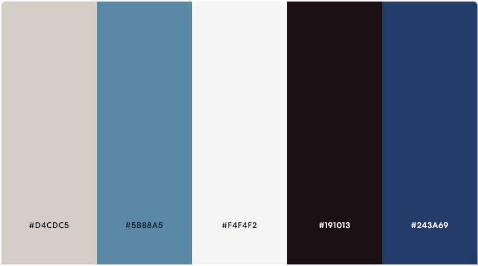
Tipografia
A fonte escolhida é a Cabin. A mesma está presente em 4 diferentes tipos de proporções, podendo ser observada abaixo.
Tamanhos:
- Título: 32 pt.
- Subtítulo: 24 pt.
- Texto: 18 pt.
- Descrição: 12 pt.
Ícones
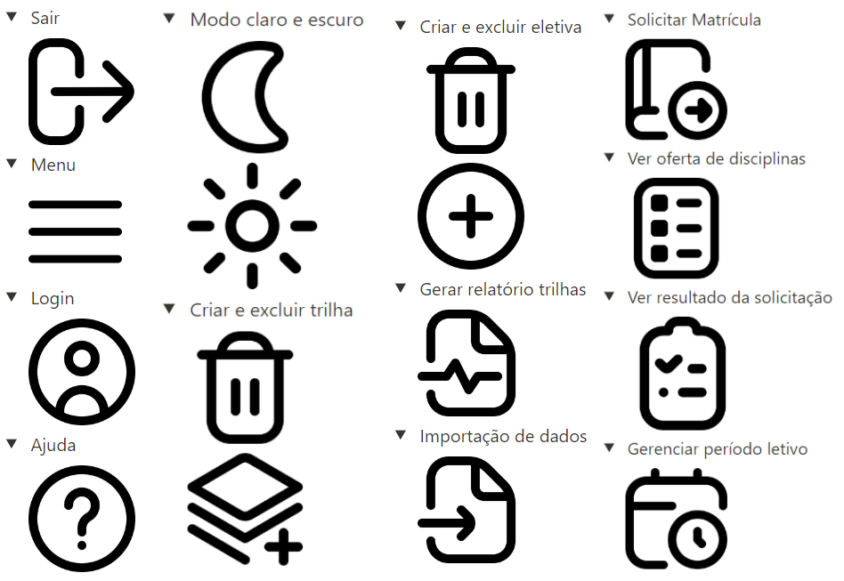
Componentes
O produto foi idealizado contendo três componentes estruturando a tela principal, sendo um Header, um Content e um Footer.
Header
O Header do produto tem a função de conter itens que possam auxiliar o usuário durante a navegação do site, estando sempre fixos e de fácil acesso.
Os itens do header que aparecerão para todos os usuários serão:
- Botão de modo claro/escuro: botão que permite o usuário mudar para o modo claro ou modo escuro;
- Botão de menu:
- Sair: permite que o usuário faça logout da aplicação;
- Ajuda: leva o usuário para uma página com um manual de informações de uso da aplicação.
- Nome da aplicação clicável que leva pra página Home.
Os itens do header exclusivos para o administrador serão:
- No botão de menu, teremos os seguintes itens:
- Criar e excluir trilha: leva o administrador para uma página em que ele possa criar ou excluir trilhas;
- Criar e excluir eletiva: leva o administrador para uma página em que ele possa criar ou excluir eletivas;
- Gerar relatório de trilhas: leva o administrador para uma página em que ele possa gerar relatório sobre as trilhas;
- Gerenciar período letivo: leva o administrador para uma página em que ele possa abrir ou fechar o período letivo;
- Importação de dados: leva o administrador para uma página em que ele possa importar dados sobre os alunos.
Os itens do header exclusivos para os alunos serão:
- No botão de menu, teremos os seguintes itens:
- Solicitar matrícula: leva o aluno para uma página em que ele possa solicitar matrícula nas trilhas e eletivas disponíveis;
- Ver oferta de disciplinas: leva o aluno para uma página em que ele possa ver as trilhas e eletivas disponíveis;
- Ver resultado da solicitação: leva o aluno para uma página em que ele possa ver o resultado das suas solicitações de matrícula.
Content
Este componente serve para apresentar o conteúdo do tópico selecionado, sendo o núcleo flexível da página que se adapta conforme a escolha feita no menu de navegação.
Footer
Este componente tem como objetivo abrigar informações de direitos autorais, além do ano de desenvolvimento e links para as redes sociais do cliente.
Estilos de interação
Um modelo conceitual é uma representação de alto nível do sistema, fornecendo uma abstração estruturada que facilita a compreensão da interação usuário-sistema. Utilizaremos duas abordagens principais:
Manipulação e navegação: envolve ações como arrastar, selecionar, abrir, fechar e ampliar em objetos virtuais. É influenciada pelo conhecimento dos usuários sobre como se movem e manipulam no mundo físico.
Exploração e navegação: é um modelo conceitual onde os usuários interagem com o sistema através da exploração de objetos, menus, links, e elementos interativos para encontrar o que desejam.
Design de interface
Para projetar uma interface pensada na experiência do usuário, utilizaremos as Heurísticas de Jakob Nielsen para guiar e validar o desenvolvimento de nossa aplicação. As heurísticas de Nielsen foram pensadas para diminuir a carga cognitiva do usuário, permitindo que sua navegação e experiência sejam mais aprimoradas e menos cansativas.
- Visibilidade do status do sistema: informar o usuário sobre qual ambiente ele estava, em qual ele está e para quais outros ambientes ele poderá se dirigir a partir de sua localização;
- Correspondência entre o sistema e o mundo real: utilizar palavras, frases, conceitos e ícones que sejam familiares ao usuário;
- Liberdade e controle do usuário: permitir que o usuário possa realizar e desfazer suas ações;
- Consistência e padrões: manter a consistência entre as telas, ícones e formas de interação;
- Prevenção de erros: evitar possíveis erros por parte do usuário, oferecendo alertas e confirmações de suas ações;
- Reconhecer ao invés de lembrar: facilitar o acesso a informações e ações, reduzindo carga cognitiva;
- Flexibilidade e eficiência: atalhos e personalização, atendendo a usuários iniciantes e experientes;
- Estética e design minimalista: interface limpa, focada em elementos essenciais, evitando distrações;
- Auxiliar usuários a reconhecer, diagnosticar e recuperar erros: mensagens claras e soluções para problemas encontrados;
- Ajuda e documentação: orientação e suporte disponíveis para esclarecer dúvidas e melhorar a experiência do usuário.
Protótipo de interface
O protótipo de interface do MVP 1 foi idealizado da seguinte maneira:


 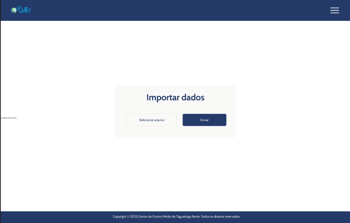
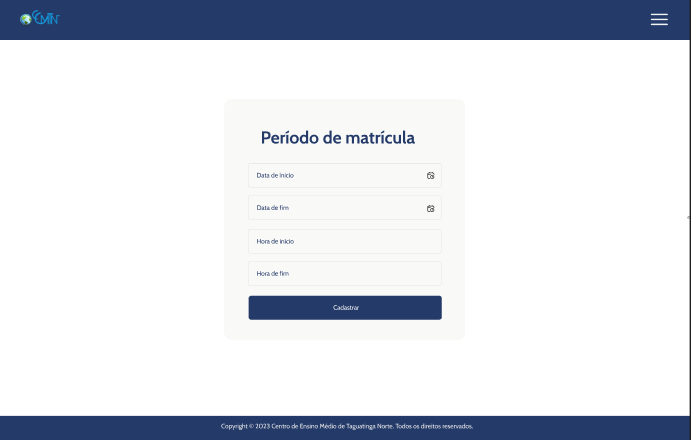
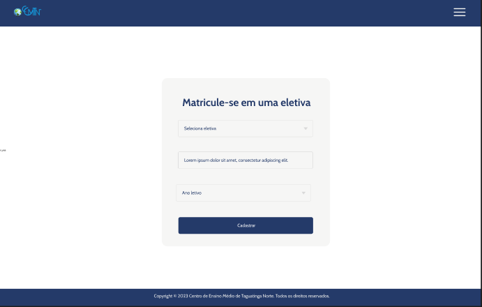
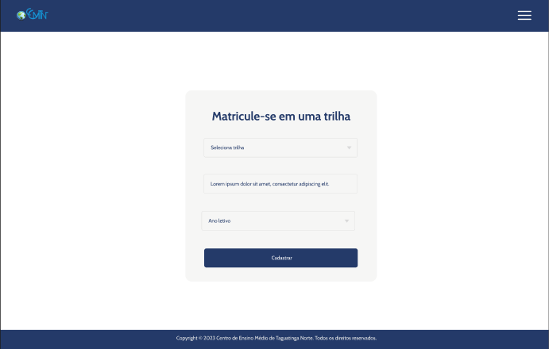
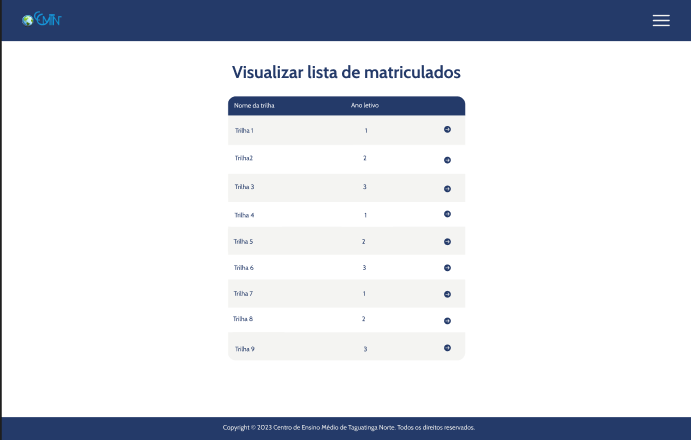
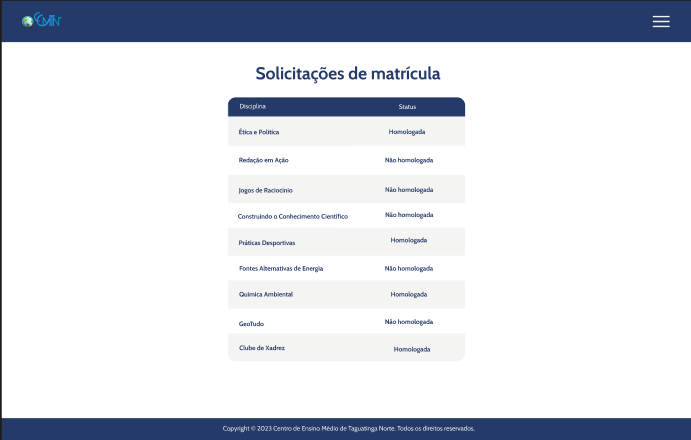
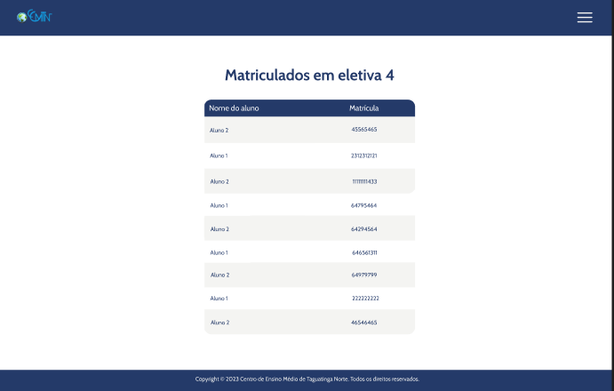
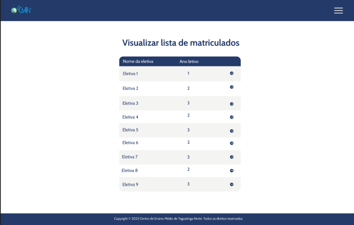
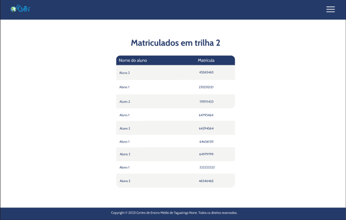
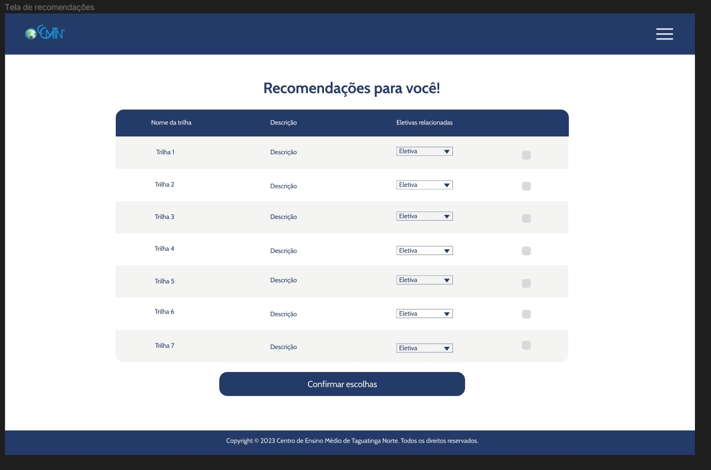
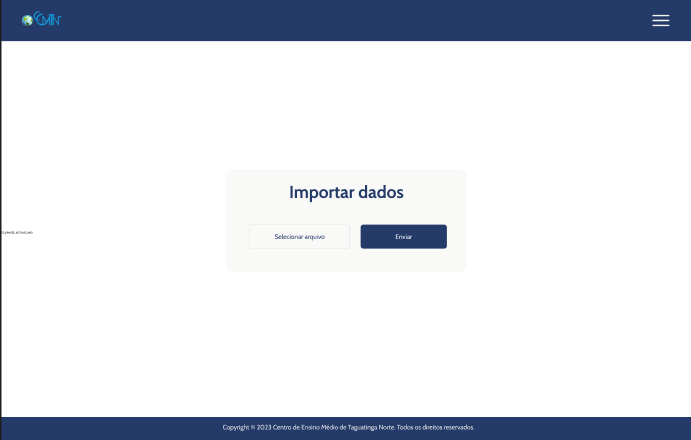
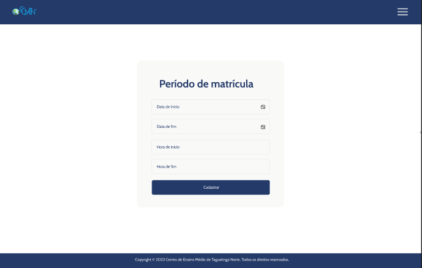
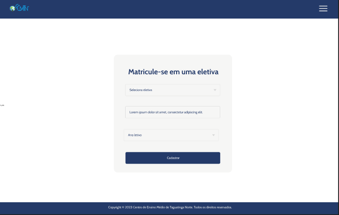
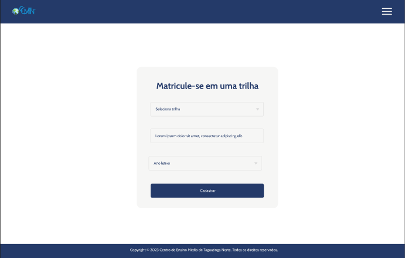
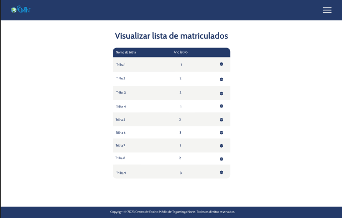
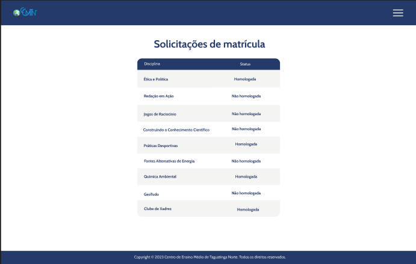
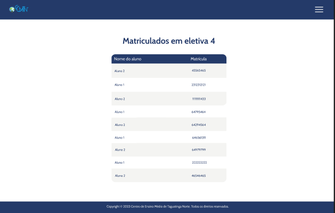
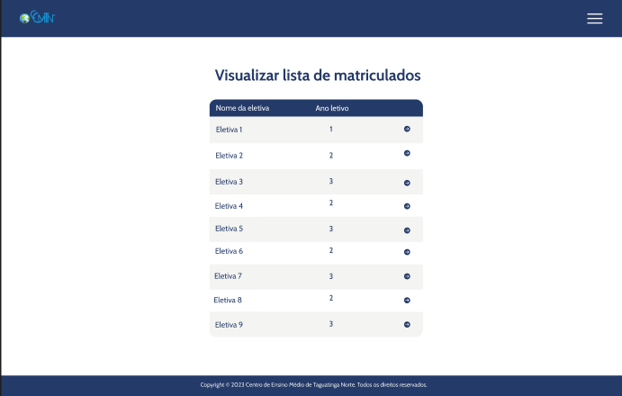
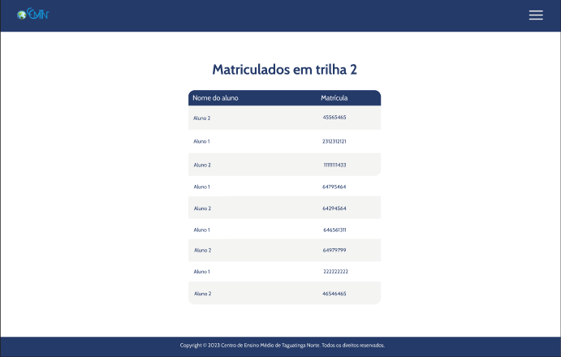
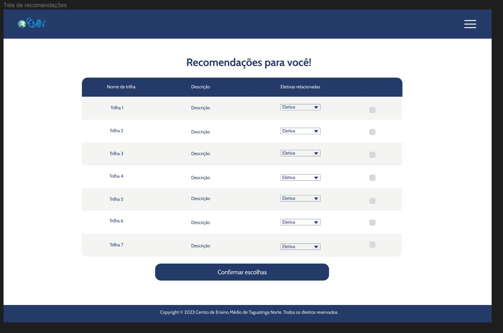
Referências bibliográficas
- YVONNE ROGERS, HELEN SHARP, JENNIFER PREECE. Design de interação: além da interação homem-computador. Bookman. Porto Alegre RS. 3ª Edição, 2013. SEÇÕES: 2.5, 2.3 e 2.4.
- Barbosa, S.D.J. & Silva, B.S. (2010). "Interação Humano-Computador". Elsevier Brasil.
- Nielsen, Jakob. "Designing Web Usability: The Practice of Simplicity". New Riders, 1999.